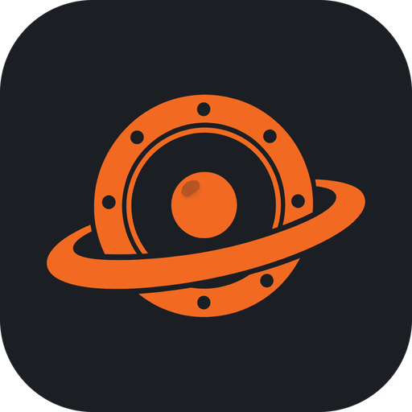
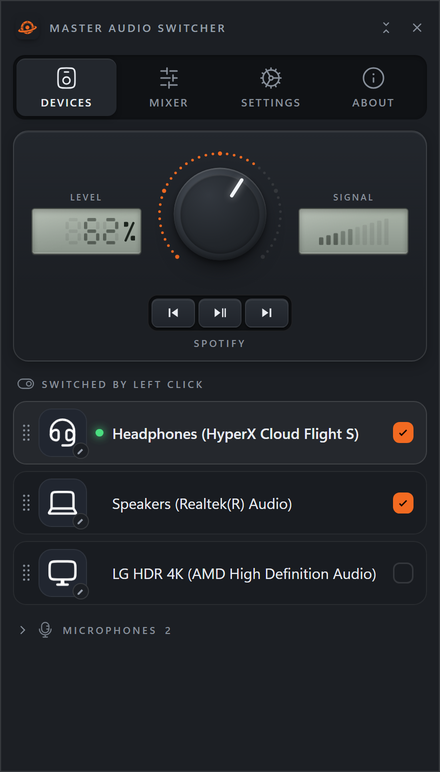
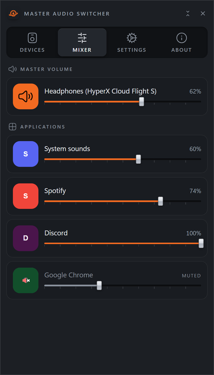
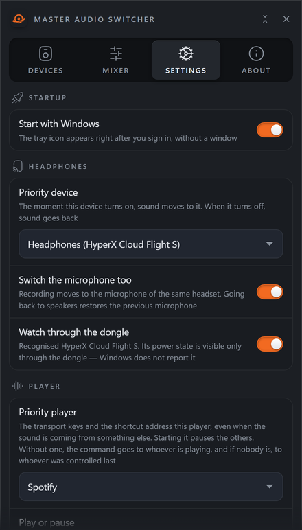

Small Windows programs, made carefully. No accounts, no telemetry, no subscriptions.
Switches sound between speakers and headphones with one click on the tray icon. Knows when a wireless headset is switched on even though Windows does not. Volume mixer, media keys, a global shortcut. Fifteen languages.



More is coming — programs and games. Watch the releases on GitHub, or check back here.